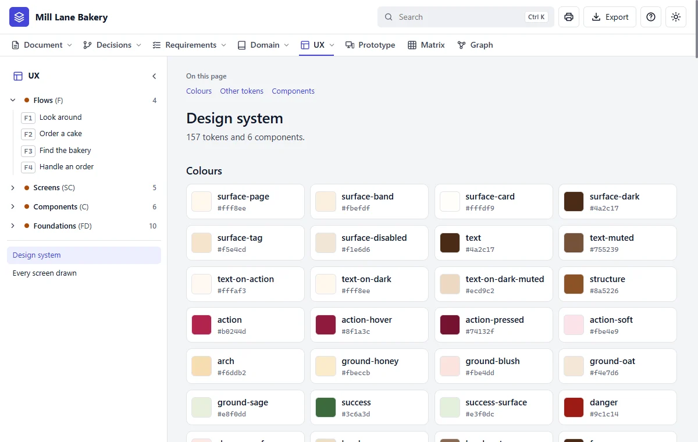
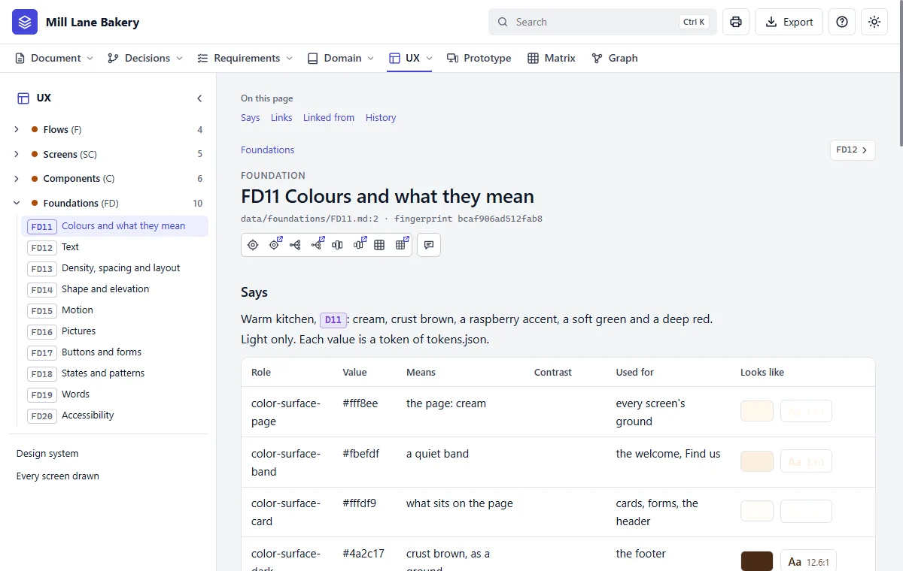

Step 11 of 20 · See what you got
Your design system
Do this
Still in UX, click Design system on the left.

What it holds
A design system is the look written down, so every screen agrees. Two levels work together:
| Level | It says | Example |
|---|---|---|
| Tokens | The exact values, kept in one file, prototypes/tokens.json | action is #b0244d, the raspberry |
| Foundations | The rules for using them | Colours and what they mean |

Try saying
Make the accent colour a deep plum, and check it's still easy to read.